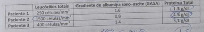

Questão 1 · Estratif icação do risco cardiovascular em pacientes sem uso de estatinas · Metas terapêuticas · 4000185804Estratif icação do risco cardiovascular em pacientes em uso de estatinas Paciente D.A.C., 50 anos, feminina, refere internação por infarto agudo do miocárdio há 3 meses, tendo realizado angioplastia de coronária direita com colocação de endoprotese vascular (stent). É portadora de diabetes mellitus tipo 2 e hipertensão arterial. Assinale a alternativa que apresenta a opção correta para a classificação de risco cardiovascular global, a meta de LDL colesterol e uma sugestão de tratamento com medicação hipolipemiante recomendada para essa paciente, de acordo com a Diretriz Brasileira de Prevenção de Aterosclerose?
A Alto risco, LDL < 70 mg/dl e atorvastatina 40 mg/dia.
B Alto risco, LDL < 50 mg/dl e rosuvastatina 20 mg/dia.
C Muito alto risco, LDL < 70 mg/dl e rosuvastatina 40 mg/dia.
D Muito alto risco, LDL < 50 mg/dl e atorvastatina 80 mg/dia.
Questão 2 · Dermatologia · Apresentação clínica · Agente etiológico e transmissão · 4000185803O Estado do Espirito Santo tem presenciado o aumento do número de casos como a da paciente a seguir: Paciente do sexo feminino, 72 anos, branca, iniciou com pápula eritematosa que evoluiu para pústula no dedo indicador da mão direita e trajeto eritemato-edematoso no braço direito e sobre essa lesão linear surgiram gomas. Na história clínica a paciente é cuidadora de gatos e foi arranhada por um deles durante alimentação dos animais. Qual o diagnóstico mais provável para a paciente e a melhor conduta em termos de saúde pública?
A Covid-19 - vacinação anti-coronavírus.
B Sarampo - vacina tríplice.
C Esporotricose - abrigo e castração para os gatos e os cachorros.
D Doença da arranhadura dos gatos - hábitos higiênicos adequados dos humanos e animais.
Questão 3 · Def inição · 4000185802Mulher, 62 anos, portadora de doença arterial coronariana e doença pulmonar obstrutiva crônica (DPOC), já em uso de formoterol, tiotrópio e budesonida inalatórios. Vem ao ambulatório referindo piora da dispneia há 2 semanas além de piora da intensidade e frequência de tosse, com secreção amarelada. Não apresentou febre. Ao exame encontra-se confortável, ausculta pulmonar com redução difusa do murmúrio vesicular. Em relação ao caso descrito, assinale a alternativa correta.
A A principal causa de exacerbação da DPOC é a poluição.
B A exacerbação da DPOC pode ser definida como piora aguda dos sintomas respiratórios que demandam terapia adicional.
C Os broncodilatadores de longa ação são os preferíveis no tratamento da exacerbação da DPOC.
D O tratamento deve ser realizado com prednisona, 40mg ao dia por 14 dias.
Questão 4 · Etiologia e f isiopatologia · 4000185801Sobre a asma, assinale a alternativa correta.
A Os sintomas de asma podem ser desencadeados por exercício, risadas, alérgenos ou ar frio.
B Uma espirometria, idealmente, deve ser realizada após 6 meses do início do tratamento.
C Em pacientes com asma leve, o tratamento recomendado é uso de broncodilatador de curta ação de resgate, em caso de crises.
D Obesidade não é um fator de risco para exacerbações de asma.
Questão 5 · Tratamento no paciente adulto · Paciente adulto · 4000185800Homem de 32 anos deu entrada no pronto socorro com poliúria, confusão mental e perda ponderal. Ao exame físico apresentava-se torporoso, hipocorado, com níveis pressóricos de 112/55 mmHg, frequência cardíaca de 93 bpm, temperatura axilar de 36,8°C, ausculta cardíaca e respiratória sem alterações, sem dor ou visceromegalias à palpação abdominal, sem dé cit neurológico focal. Os exames laboratoriais evidenciaram hemácias: 4,8 milhões/mm³, hemoglobina: 16,9 g/dL, hematócrito: 55%, leucócitos: 8920/mm³, plaquetas: 288.000/mm³, glicose: 822 mg/dL, sódio: 158 mmol/L, potássio: 3,8 mmol/L, magnésio: 2,1 mg/dL, uréia: 56 mg/dL, creatinina: 1,0 mg/dL; gasometria de sangue venoso: pH: 7,09, pCO₂: 47 mmHg, pO₂: 36 mmHg, bicarbonato: 18 meq/L; exame de urina: pH: 5,2, densidade: 1,045, glicose: ++++, proteínas: +, cetonas: ++++, bilirrubina: negativo, urobilinogênio: negativo, leucócitos: +, nitrito: negativo. Neste momento devem ser prescritos para este paciente
A Cloreto de sódio a 0,9% e cloreto de potássio a 10%.
B Cloreto de sódio a 0,45%, cloreto de potássio a 10%, insulina regular.
C Cloreto de sódio a 0,9%, cloreto de potássio a 10%, insulina regular, bicarbonato de sódio a 8,4%.
D Cloreto de sódio a 0,45%, cloreto de potássio a 10%, insulina regular, bicarbonato de sódio a 5%.
Questão 6 · Tratamento tópico · 4000185799Sobre o tratamento da psoríase, assinale a alternativa correta.
A O uso de glicocorticóide tópico e emolientes é a primeira linha de tratamento.
B O uso de doses elevadas de vitamina D está associado à menor progressão da doença.
C A fototerapia está melhor indicada em lesões pequenas, em associação com glicocorticóide.
D Ciclosporina ou metrotrexato devem ser iniciados precocemente para redução das lesões cutâneas.
Questão 7 · Classif icação morf ológica das anemias · 4000185798São causas de anemia normocítica.
A Doença renal, doença crônica.
B Deficiência de ferro, lesão medular.
C Mielodisplasia, talassemia minor.
D Anemia sideroblástica, anemia hemolítica.
Questão 8 · Indicações · Prevenção · 4000185797Paciente 30 anos, sexo feminino, sem comorbidades conhecidas, ao fazer trilha na região de Santa Leopoldina foi mordida na mão direita por um macaco, que em seguida fugiu para a mata. Chegou ao Pronto-Socorro cerca de 3 horas após o ocorrido. Observe as afirmativas abaixo e depois responda. I) Em situações conforme a descrita acima, deve prescrever soro e vacina antirrábicos. II) Devido à localização, deve ser abordada como mordedura grave. III) Se a lesão for grande e estiver limpa, deve ser realizado a sutura da ferida para evitar cicatrização por segunda intenção e comprometimento dos movimentos.
A Somente as alternativas l e II estão corretas.
B Somente as alternativas II e III estão corretas.
C Somente as alternativas I e III estão corretas.
D Todas as alternativas estão corretas.
Questão 9 · Calendário vacinal em adultos e idosos · 4000185796É inegável o impacto da vacinação em massa na saúde e na expectativa de vida em todo mundo, no entanto, o surgimento de grupos antivacina, usando pseudo-argumentos cientí cos que se disseminam pela internet é fonte de preocupação para as autoridades sanitárias. Cabe ao médico orientar os pacientes de maneira adequada sobre as diferentes vacinas e seus usos. Qual dessas opções pode corretamente ser repassada aos pacientes?
A A vacina contra influenza é um exemplo de vacina de vírus atenuado e, portanto, tem uso restrito em pacientes submetidos aos regimes intensivos de quimioterapia para leucemia mielóide aguda.
B A presença de comorbidades não imunossupressoras, como cardiopatias, pode contra-indicar a aplicação de vacinas de vírus atenuado.
C O profissional de saúde deve receber algumas vacinas para reduzir o risco de adoecimento e óbito entre seus pacientes; preenchem esses critérios as vacinas contra hepatite B, tríplice viral (MMR - sarampo/caxumba/rubéola) e influenza.
D São vacinas contra-indicadas em pacientes espenectomizados: BCG, rotavírus, febre amarela, varicela, dengue, HPV e tríplice viral (MMR).
Revisar: possível letra faltando em enunciado
Questão 10 · Citologia do líquido ascítico · Proteína do líquido ascítico · Gradiente de albumina soroascite GASA · 4000185795A análise do líquido ascitico é uma propedêutica importante na investigação da ascite e foi realizada em três pacientes, obtendo-se os resultados abaixo. Qual o diagnóstico mais provável dos pacientes 1, 2 e 3 respectivamente?

A Insuficiência cardíaca congestiva, cirrose hepática e tuberculose peritoneal.
B Hipotireoidismo, insuficiência cardíaca congestiva e hipertensão portal esquistosomótica.
C Cirrose hepática, síndrome nefrótica, ascite pancreática.
D Cirrose hepática, carcinomatose peritoneal, insuficiência cardíaca congestiva.
Questão 11 · Manif estações Clínicas e Exame Físico · Exames de Imagem · 4000185794Paciente masculino, 74 anos, diabético, hipertenso e com bypass coronariano prévio, deu entrada no hospital com diagnóstico de pé diabético, sem sinais de sepse, sendo internado para antibioticoterapia endovenosa. No segundo dia de internação, iniciou quadro de dor abdominal difusa, intensa, encontrado gemente no quarto. Ao exame, paciente acordado, comunicativo, gemente, afebril, eupneico, taquicárdico (frequência cardíaca de 101 bpm), ritmo cardíaco irregular, pulso amplo, abdome discretamente distendido, ruídos hidroaéreos diminuídos, timpânico, depressível, levemente doloroso, sem sinais de irritação peritoneal. Apresentou hábito intestinal normal até o início da dor. Diante do quadro, qual dos itens abaixo combina o tipo mais provável de abdome agudo e sua respectiva propedêutica de exame de imagem mais indicada:
A Abdome agudo inflamatório, ultrassonografia de abdome total.
B Abdome agudo obstrutivo, radiografia de abdome agudo (em pé, deitado e cúpulas diafragmáticas).
C Abdome agudo hemorrágico, radiografia de abdome agudo (em pé, deitado e cúpulas diafragmáticas).
D Abdome agudo vascular, angiotomografia de abdome com contraste endovenoso.
Questão 12 · Apendicite Aguda Complicada · Apendicetomia Aberta x Apendicectomia Laparoscópica · 4000185793Apendicite Aguda Não Complicada Sobre a apendicite aguda é correto afirmar que:
A No escore diagnóstico de Alvarado estão incluídos exames laboratoriais, tais como proteína C reativa.
B Antibioticoterapia pós-operatória está indicada para pacientes com apendicite aguda nãocomplicada.
C A apendicectomia videolaparoscópica está associada a maior incidência de abscesso intraabdominal em casos de apendicites agudas com perfuração e necrose.
D O tratamento não-operatório pode ser indicado com bons resultados para aqueles pacientes que se apresentam com apendicolito nos exames de imagem.
Questão 13 · Pneumotórax Hipertensivo · 4000185792Paciente politraumatizado após acidente motociclístico deu entrada gravíssimo à unidade de emergência, já intubado e apresentando en sema subcutâneo em tórax, desvio traqueal para a esquerda, turgência jugular e murmurio vesicular abolido em hemitórax direito. Frequência cardíaca de 158 bpm, pressão arterial de 88/56 mmHg, saturação periférica de oxigênio de 89%, mesmo com alto uxo de oxigênio. Observe as alternativas relacionadas ao quadro clínico do paciente e assinale a correta:
A A radiografia de tórax é imprescindível para determinar o tratamento adequado.
B O tratamento definitivo adquado para este paciente deve ser a punção com agulha no 5º espaço intercostal à esquerda.
C O paciente apresenta choque grau IV e o tratamento a ser instituído de imediato consiste em hemotransfusão maciça.
D A ventilação com pressão positiva é um fator de piora clínica deste paciente na presença de lesão da pleura visceral.
Questão 14 · Características Ultrassonográf icas dos Nódulos · Indicações de PAAF · Classif icação Bethesda · 4000185791Paciente MCF, sexo feminino, 51 anos, refere ter percebido no banho a presença de um nódulo em topogra a cervical anterior a esquerda, medindo cerca de 3 cm, não doloroso e que se movia quando a paciente deglutia. A paciente procurou assistência médica e foi solicitado ultrassonogra a do pescoço. A ultrassonogra a mostrou um nódulo de 2,5 cm, hipoecóico de contornos irregulares e com microcalci cações. Foi solicitado uma punção aspirativa do nódulo que teve o resultado de Bethesda V. Qual das condutas abaixo não seriam adequadas para o caso acima?
A Tireoidectomia parcial com exame de congelação intraoperatória.
B Acompanhamento.
C Tireoidectomia parcial.
D Tireoidectomia total.
Questão 15 · Choque distributivo · 4000185790O SAMU acaba de trazer um paciente vítima de atropelamento por caminhão. Paciente tem 21 anos e apresenta quadro de hipotensão, bradiarritmia e desregulação da temperatura. Diante desse quadro foi considerada a hipótese de choque neurogênico. A propósito do diagnóstico estabelecido, assinale a opção correta:
A É uma consequência devastadora da lesão da medula espinhal, principalmente associada a lesão da coluna torácica baixa e lombar alta.
B É clinicamente similar ao choque hipovolêmico.
C Ocorre devido a perda súbita do tônus simpático, com função parassimpática preservada.
D O choque neurogênico, caracteriza-se por perda de todos os controles neurais abaixo da lesão.
Questão 16 · Higienização das Mãos e Paramentação · 4000185789Medidas Gerais de Prevenção de Inf ecção do Sítio Cirúrgico ISC Em 1846, Ignaz Semmelweis, médico húngaro, reportou a redução no número de mortes maternas por infecção puerperal após a implantação da prática de higienização das mãos em um hospital em Viena. Desde então, esse procedimento tem sido recomendado como medida primária no controle da disseminação de agentes infecciosos. Todo médico deve reconhecer a importância destes cuidados, e, evidentemente, praticá-los em suas atividades. Acerca deste tema, assinale a afirmativa correta:
A Preparo pré-operatório de mãos ou antissepsia cirúrgica das mãos é uma prática obrigatória antes de qualquer cirurgia de médio e grande porte, e tem por objetivo eliminar as microbiotas transitória e residente das mãos do cirurgião.
B Para o preparo pré-operatório de mãos, a clorexidina é o agente antisséptico mais usado por ter efeitos excelentes contra bactérias gram-positivas, gram-negativas, micobactérias e fungos, sendo, inclusive, esporicida.
C A mais recente atualização da Norma Regulamentadora (NR) 32 permite que profissionais utilizem unhas postiças como adornos, desde que estejam curtas e limpas, no contato com o paciente.
D O ceticismo dos profissionais de saúde a respeito da importância da higienização de mãos é um dos fatores apontados por eles próprios para a baixa adesão a esta prática.
Questão 17 · Procedimentos à Beira Leito · 4000185788A ultrassonografia é um advento tecnológico que está cada vez mais presente na prática clínica. Um dos principais exemplos é a utilização dessa ferramenta na passagem de cateteres venosos. Em um cenário de acesso venoso central com auxílio da ultrassonografia, assinale a alternativa correta:
A Apesar do avanço tecnológico no uso da ultrassonografia para punções venosas profundas a nível cervical e de subclávia, não há evidências que ela diminui a incidência de tamponamento cardíaco, hematoma cervical maciço com obstrução de via aérea e a punção de tubo endotraqueal.
B O uso da ultrassonografia dispensa o posicionamento do paciente, indispensável na técnica às cegas, para determinação dos referenciais anatômicos. Uma evidência dessa afirmação é a não necessidade de rotação contralateral da cabeça para a punção da veia jugular interna.
C Para melhor performance do transdutor e visualização adequada da imagem é fundamental a utilização de um gel. Para manter um ambiente estéril, utiliza-se gel estéril e na sua ausência, pode-se obter resultado semelhante com uso de ldocaína em gel estéril ou água destilada para injeção.
D O operador que estiver executando uma punção venosa profunda guiada por ultrassonografia deve manter visualização permanente do corpo da agulha, não sendo necessário acompanhar a ponta da agulha quando ela ultrapassa o campo de imagem.
Questão 18 · Anticoagulação · 4000185787Paciente de 63 anos, operada há 4 dias para tratamento de hérnia inguinal esquerda, retornou ao pronto socorro referindo dor de média para grande intensidade no membro inferior esquerdo, que iniciou naquela madrugada na virilha e progrediu distalmente se tornando mais acentuada na panturrilha. Notou aumento do volume da extremidade difusamente, incluindo o pé, com discreto aumento da temperatura e a perna e o pé caram mais arroxeados. Ao exame físico não há sinal de Godet positivo. A panturrilha está mais rme que a do lado direito. Tem pulso pedioso 3+/4. Pressão arterial: 145/95 mmHg, frequência cardíaca: 92 bpm, sem dispneia ou tosse. Temperatura axilar: 35.9 graus celsius. De posse desses dados, indique qual medicamento não é apropriado para o tratamento do caso.
A Varfarina sódica.
B Apixabana.
C Clopidogrel.
D Rivaroxabana.
Questão 19 · Estimativa da Superf ície Corpórea Queimada e Circulação · 4000185786Após um incêndio, um paciente de aproximadamente 70 kg sofreu queimadura de primeiro grau em toda região da cabeça, de segundo grau na parte anterior do tronco (abdome e tórax), e de terceiro grau em todo membro inferior esquerdo. Calcule a superfície corpórea queimada (SCQ) e a quantidade de volume de hidratação a ser reposto no período de 16 a 24 horas pós queimadura:
A SCQ 36%, volume de 2520 ml.
B SCQ 45%, volume de 6300 ml.
C SCQ 36%, volume 5040 ml.
D SCQ 45%, volume de 3150 ml.
Questão 20 · Fechamento da Lesão · 4000185783Paciente vítima de mordedura humana com arrancamento de cerca de 40% do lábio inferior dá entrada no pronto socorro com sangramento importante e com a porção arrancada acondicionada um recipiente com gelo. Conduta a ser adotada:
A Limpeza adequada, hemostasia e enxertia total.
B Limpeza adequada, hemostasia, deixar aberto.
C Limpeza adequada, hemostasia, sutura por planos.
D Limpeza adequada, hemostasia e enxertia parcial.
Questão 21 · Diagnóstico na gestação · Rastreamento na gestação · 4000185782Quando a infecção por toxoplasmose é adquirida pela primeira vez durante a gravidez, os parasitas podem ser transmitidos da mãe para o feto, resultando em toxoplasmose congênita. Uma gestante de 14 semanas comparece à consulta trazendo resultados da primeira rotina laboratorial. Possui sorologia para toxoplasmose IgG não reagente e IgM não reagente. Qual a conduta mais correta a ser seguida?
A Considerar a paciente imune e tranquilizá-la com relação à doença.
B Solicitar teste de avidez para determinar quando houve a infecção e avaliar se há necessidade de tratamento.
C Iniciar o tratamento com Espiramicina imediatamente.
D Considerar a paciente não imunizada e repetir a sorologia no segundo e no terceiro trimestres, além de orientar sobre a alimentação e os riscos da infecção.
Questão 22 · Classif icação · 4000185781A pré-eclâmpsia aumenta os riscos de morte materna e perinatal, sendo responsável pelo aumento na incidência da prematuridade. Com relação a pré-eclâmpsia, assinale a alternativa incorreta.
A A pré-eclâmpsia é uma doença progressiva, multissistêmica, caracterizada pelo início de hipertensão e proteinúria ou início de hipertensão e disfunção significativa de órgãos-alvo, com ou sem proteinúria, na última metade da gravidez ou pós-parto.
B A hipertensão gestacional verdadeira deve se resolver até o parto. Se persistir pós-parto, o diagnóstico é ""revisado"" para hipertensão crônica que foi mascarada pela diminuição fisiológica da pressão arterial que ocorre no início da gravidez.
C A pré-eclâmpsia é causada por disfunção vascular placentária e materna e se resolve após o nascimento em um período de tempo variável.
D A síndrome HELLP (hemólise, elevação das enzimas hepáticas, plaquetas baixas), provavelmente representa um tipo de pré-eclâmpsia com características graves.
Questão 23 · Intercorrências obstétricas obstetrícia patológica · Introdução · 4000185779De acordo com o caderno de atenção básica do Ministério da Saúde do Brasil, dentre as situações abaixo, qual a alternativa que não indica encaminhamento imediato da gestante para o serviço de urgência obstétrica?
A Pressão arterial 150/100 mmHg.
B Anemia sintomática (dispneia, taquicardia, hipotensão).
C Doença falciforme com crise álgica.
D Sangramento vaginal ativo com dor abdominal, colo uterino aberto e saída de material sugestivo de restos ovulares ao exame especular.
Questão 24 · Monitorização pós tratamento · Diagnóstico da síf ilis · 4000185777Assinale a alternativa incorreta sobre sífilis na gestação:
A A penicilina benzatina é a única opção segura e eficaz para o tratamento de sífilis na gestante.
B O VDRL é o método de escolha para triagem diagnóstica.
C O tratamento deve ser iniciado com apenas um teste reagente, treponêmico ou não, sem aguardar o resultado do segundo teste.
D O Fta-Abs é um teste treponêmico utilizado para monitoramento da resposta ao tratamento.
Questão 25 · Diagnóstico · Teste oral de tolerância à glicose 75g TOTG 75g · 4000185775A realização do teste oral de tolerância à glicose com 75 g de glicose é considerada um teste de triagem de diabetes gestacional em mulheres no pré-natal. Assinale a alternativa que apresenta o tempo ideal preconizado para a realização desse teste.
A Entre 24 e 28 semanas de gestação.
B Entre 18 e 22 semanas de gestação.
C Logo no início da gestação.
D Seis meses após o parto.
Questão 26 · Contraindicações · 4000185774São situações clínicas com contraindicações absolutas (categoria 4) aos anticoncepcionais hormonais combinados, de acordo com critério médico de elegibilidade da Organização Mundial da Saúde (OMS)
A Trombose venosa profunda e embolismo pulmonar atual ou pregresso, independentemente do uso de anticoagulante.
B Anemia macrocitica.
C Endometriose e adenomiose.
D Diabetes Mellitus não complicado com menos de 20 anos de doença.
Questão 27 · Contraindicações · 4000185772Paciente de 53 anos chega ao ambulatório queixando-se de fogachos, ressecamento vaginal e alterações de humor. Ela refere amenorreia há 15 meses, obesidade grau 2, tem dislipidemia e infarto agudo do míocárdio há 3 meses. Assinale a alternativa que apresenta uma conduta terapêutica inadequada para essa paciente.
A Cimicifuga Actea via oral.
B Promestrieno via vaginal.
C Estradiol + noretisterona via oral.
D Inibidor seletivo da recaptação de serotonina.
Questão 28 · Tratamento cirúrgico · 4000185771Em paciente com adenocarcinoma de endométrio optou-se pela círurgia de Wertheim-Meigs, nesse caso, qual órgão ou estrutura será preservado?
A Ovários.
B Terço médio da vagina.
C Paramétrios.
D Linfonodos pélvicos.
Questão 29 · Complicações · Tratamento · 4000185769São critérios para indicação de tratamento hospitalar da doença inflamatória pélvica, exceto:
A Abscesso tubo ovariano.
B Ausência de resposta clínica após 72 h de tratamento com antibióticos.
C Alergia ao antibiótico Doxiciclina.
D Estado geral grave com náuseas, vômito e febre
Questão 30 · Rastreamento mamográf ico · Ressonância magnética · 4000185768Sobre o câncer de mama assinale a alternativa incorreta.
A Mulheres com uma mutação BRCA 1 têm um risco absoluto de quase 60% de desenvolver câncer de mama até os 70 anos de idade.
B A mortalidade por câncer de mama caiu drasticamente desde a década de 1980, e tanto a detecção precoce por meio de triagem quanto as melhorias no tratamento do câncer de mama são responsáveis por essa redução na mortalidade.
C A ressonância magnética, quando disponível, é preferível à mamografia no diagnóstico do câncer de mama.
D A sensibilidade e especificidade da mamografia são dependentes da idade, sendo maior em mulheres mais velhas do que em mulheres mais jovens.
Questão 31 · Estratégia de observação longitudinal x transversal · Estudos SeccionaisTransversais · 4000185767Um estudo objetivou verificar fatores associados à piora do estilo de vida, durante a pandemia de COVID-19, entre trabalhadores por aplicativos residentes no Brasil. Para tal, aplicou um questionário, contendo questões sociodemográ cas e sobre o estado de saúde, a pessoas selecionadas aleatoriamente a partir de um banco de informações sobre trabalhadores de uma empresa de entrega de alimentos por aplicativo que opera nacionalmente. A aplicação do questionário a cada trabalhador se deu entre os meses de outubro e dezembro de 2020, por telefone, sendo entrevistados 1500 pessoas. Foi realizada análise estatística descritiva, bivariada e de regressão logística. O desenho do estudo descrito acima é:
A Ecológico.
B Transversal.
C Caso-controle.
D Coorte.
Revisar: possível letra faltando em enunciado
Questão 32 · Sensibilidade · 4000185766Um novo teste para identi cação de infecção pelo SARS-CoV-2 foi testado em 1000 pessoas. Os resultados foram: dentre as 200 pessoas que estavam infectadas, o novo teste foi positivo em 170; e dentre as 800 pessoas que não estavam infectadas, o novo teste foi negativo em 750. A sensibilidade desse novo teste é:
A 77%.
B 85%.
C 93%.
D 96%.
Questão 33 · Coef iciente ou Taxa de mortalidade pósneonatal ou mortalidade tardia · 4000185764Define-se a Taxa de Mortalidade Pós-neonatal em determinado espaço geográfico e ano, como o:
A Número de óbitos até 27 dias de vida completos, por mil nascidos vivos.
B Número de óbitos entre 0 e 6 dias de vida completos, por mil nascidos vivos.
C Número de óbitos entre 7 e 27 dias de vida completos, por mil nascidos vivos.
D Número de óbitos entre 28 e 364 dias de vida completos, por mil nascidos vivos.
Questão 34 · Prevenção Terciária · 4000185763Leve em consideração a prescrição de reabilitação cardiorrespiratória em um paciente que sofreu infarto agudo do miocárdio. Em qual nível de prevenção essa prescrição se situa?
A Primária.
B Secundária.
C Terciária.
D Quaternária.
Questão 35 · Método Clínico Centrado na Pessoa · 4000185762Paciente de 70 anos, diabético e hipertenso, comparece à consulta na Unidade de Saúde da Família para acompanhamento regular. O médico de família identi cou alguns problemas na alimentação. Como era novo no território, re etiu com o paciente sobre as bases culturais de alguns hábitos alimentares que observou na entrevista. Comentou com o paciente que já havia percebido as mesmas coisas em várias outras pessoas que residem no local. A partir disso, o paciente relatou algumas questões familiares que in uenciam sua alimentação e reconheceu certas heranças culturais em seus hábitos. Qual componente do Método Clínico Centrado na Pessoa é ilustrado no caso acima?
A Explorando a saúde, a doença e a experiência da doença.
B Entendendo a pessoa como um todo.
C Elaborando um plano conjunto de manejo dos problemas.
D Intensificando a relação entre a pessoa e o médico.
Questão 36 · Método SOAP · 4000185749Paciente de 20 anos buscou a Unidade de Saúde da Família com queixa de dispepsia, sem fatores de risco ou sinais de alerta, há aproximadamente 2 semanas. Foi utilizado o modelo SOAP para o registro clínico dessa consulta. Marque a alternativa que apresenta uma relação incorreta entre a dimensão SOAP e seu registro.
A S - Dispepsia há 2 semanas. Sem vômitos. História familiar de neoplasia de cólon.
B O - Dor leve à palpação de região epigástrica. Sem sinais de alerta ao exame. Medo de neoplasia.
C A - Dispepsia sem sinais de alerta.
D P - Proposto mudança de estilo de vida. Prescrito omeprazol por 6 semanas. Avaliar necessidade de endoscopia na consulta de retorno.
Questão 37 · Atributos gerais da Atenção Primária à Saúde APS · 4000185748Em um relatório de gestão, consta que 30% das Unidades de Saúde da Família de um município ofertam inserção de DIU, pequenos procedimentos cirúrgicos e eletrocardiograma. Esse percentual é superior à média dos municípios do estado, o que foi considerado positivo para a gestão. Qual atributo da Atenção Primária à Saúde foi avaliado no enunciado?
A Acesso de Primeiro Contato.
B Longitudinalidade do Cuidado.
C Integralidade.
D Coordenação do Cuidado.
Questão 38 · Redes temáticas · 4000185743Uma das estratégias que o Brasil adotou para a organização do sistema de saúde foi fortalecer redes de atenção à saúde, tendo sido definido algumas áreas prioritárias (redes temáticas). Estão dentre as redes temáticas prioritárias pactuadas pelos diferentes níveis de gestão do SUS:
A Rede Cegonha, Rede de Atenção às Urgências e Emergências, Rede de Cuidado à Pessoa com Deficiência.
B Rede de Internação Domiciliar, Rede de Atenção à População em Situação de Rua, Rede Cegonha.
C Rede de Atenção às Urgências e Emergências, Rede de Atenção às Doenças Raras, Rede de Atenção Psicossocial.
D Rede de Atenção à Vítima de Violência, Rede de Atenção às Doenças e Condições Agudas e Crônicas, Rede de Atenção Odontológica.
Questão 39 · Financiamento do SUS · 4000185742Em 2019 foi instituído o Programa Previne Brasil, que estabelece novo modelo de nanciamento de custeio da Atenção Primária à Saúde no âmbito do Sistema Único de Saúde. Dentre os dispositivos elencados nas alternativas abaixo, qual foi inserido pelo Programa Previne Brasil?
A Piso da Atenção Básica Fixo.
B Pagamento por equipe NASF (Núcleo de Apoio à Saúde da Família).
C Componente Qualidade e Desempenho do Piso de Atenção Básica Variável.
D Capitação ponderada.
Questão 40 · Financiamento na Lei n 80801990 · 4000185740De acordo com a Lei 8080/90, que regula as ações e serviços de saúde no Brasil, à direção estadual do Sistema Único de Saúde (SUS) não compete:
A Prestar apoio técnico e financeiro aos municípios.
B Executar a totalidade das ações de saúde das redes hierarquizadas do SUS.
C Coordenar e, em caráter complementar, executar ações e serviços de saúde do trabalhador.
D Gerir sistemas públicos de saúde de alta complexidade.
Questão 41 · Curvas de Crescimento · 4000185739O acompanhamento do peso, altura/comprimento e perímetro craniano, este nos 3 primeiros anos de vida, pode orientar o médico sobre as condições de saúde de seu paciente. No acompanhamento do crescimento é correto afirmar:
A Se o recém-nascido apresenta um comprometimento só do peso, é maior a probabilidade de um agravo ter ocorrido nos meses finais da gestação.
B Crianças nascidas com peso inferior a 3 kg são denominadas de baixo peso.
C O crescimento intrauterino é predominantemente dependente do potencial genético da criança.
D A criança cresce aproximadamente 45 cm e duplica de peso em torno do seu primeiro aniversário.
Questão 42 · Etiologia e Epidemiologia · 4000185737A laringotraqueobronquite é a causa mais comum de obstrução de vias aéreas superiores em crianças, respondendo por 90% dos casos de estridor. Na laringotraqueobronquite é correto afirmar:
A A etiologia bacteriana é a mais comum, sendo os principais agentes o pneumococo e o Haemophylus.
B Acomete principalmente crianças com menos de um ano de idade, com predomínio do sexo feminino (3 vezes mais comum no sexo feminino).
C Quando a etiologia é viral, os principais agentes são os vírus parainfluenza (tipos 1, 2 e 3), influenza A e B e vírus respiratório sincicial.
D A etiologia viral é a mais comum, sendo os principais agentes os vírus adenovírus, pneumovírus e rinovírus.
Questão 43 · Características do leite materno · 4000185735O aleitamento materno é a primeira prática alimentar a ser recomendada para a promoção da saúde e adequado desenvolvimento infantil. No aleitamento materno é correto afirmar:
A O leite materno tem mais caseína do que proteína do soro, o que leva a capacidade de provocar esvaziamento gástrico mais lento, deixando a criança mais saciada.
B Em recém-nascidos pré-termos, o leite materno deve ser evitado devido ao risco aumentado de enterocolite necrosante.
C A composição e aspecto do leite materno é bastante heterogêneo e varia com a alimentação, idade e raça da mãe.
D O colostro contém mais proteínas e menos lipídios do que o leite maduro e é rico em imunoglobulinas, em especial a IgA.
Questão 44 · Epidemiologia · Origem · Etiopatogenia · 4000185734A diarreia aguda é uma enfermidade muito comum em pediatria e nela é correto afirmar:
A As parasitoses são as principais causadoras das diarreias infecciosas.
B A diarreia aguda pode ter causas infecciosas e não infecciosas. Mundialmente, as causas não infecciosas apresentam uma maior prevalência e são causadas principalmente por alergias, intolerâncias e erros alimentares.
C Entre os vírus, o rotavírus é o principal responsável por episódios de diarreia aguda, mas geralmente as infecções são autolimitadas e raramente necessitam de hospitalização.
D A diarreia provocada pela Escherichia coli enteropatogênica apresenta muco e é sem sangue, porém pode apresentar dor abdominal, vômitos e febre.
Questão 45 · Aspectos Clínicos · 4000185732O acometimento de crianças por doença exantemática é um dos quadros mais comuns da prática médica, impondo dificuldade diagnóstica frequentemente. Nas doenças exantemáticas é correto afirmar:
A Na rubéola ocorre prostração intensa, febre elevada (auge no aparecimento do exantema), tosse seca e intensa, coriza abundante e olhos hiperemiados, com lacrimejamento e fotofobia. O exantema é maculopapular morbiliforme confluente e pode apresentar manchas de Koplik.
B Na roséola infantil ou exantema súbito, o exantema inicia na face como maculopápulas que confluem, tornando- se uma placa vermelho-rubra, concentrada, principalmente, na região das bochechas. Poupa a região perioral, a testa e o nariz.
C No eritema infeccioso, o exantema pode persistir por um período longo, até mais de 10 dias, e exacerbar-se ou reaparecer quando a criança é exposta ao sol, faz exercício ou quando há alterações de temperatura.
D No sarampo ocorre mal-estar, febre baixa e exantema maculopapular e morbiliforme não confluente que inicia na face e evolui para o tronco. Apresenta adenopatia (retroauricular e occipital) e artralgia.
Questão 46 · Anemia f erropriva na inf ância · Prof ilaxias Ferro Vitaminas D e A · Prof ilaxia Ferro · 4000185731Na anemia ferropriva é correto afirmar:
A São fatores de risco para anemia ferropriva crianças grandes para idade gestacional (GIG), ou com peso superior a 4 kg no nascimento, e lactente em crescimento lento.
B São fatores de risco para anemia ferropriva o clampeamento do cordão umbilical após cinco minutos de vida.
C Nos lactentes em aleitamento materno exclusivo, sem fatores de risco, recomenda-se a suplementação medicamentosa profilática a partir dos 180 dias de vida, até o final do segundo ano.
D Em recém-nascidos prematuros (idade gestacional inferior a 39 semanas) ou com peso inferior a 2.500g, o início da suplementação de ferro deve ocorrer ao nascimento.
Questão 47 · Pediatria · Fundamentos de oncohematologia · Epidemiologia das leucemias agudas · 4000185729No câncer infantil é correto afirmar:
A Os cânceres pediátricos mais frequentes são as leucemias, os tumores do sistema nervoso central e os linfomas.
B O câncer na faixa etária pediátrica geralmente é hereditário e, na maioria dos casos, apresentam história familiar e/ou associações com alterações genéticas ou congênitas. Entretanto, o retinoblastoma (tumor maligno intraocular) raramente tem origem genética.
C A trissomia 21 tem envolvido o gene GATA 1 que interfere na diferenciação celular. Esses pacientes têm risco aumentado para o desenvolvimento de neoplasia de sistema nervoso central (cerca de 10 vezes maior) e câncer de estômago.
D A leucemia aguda raramente acomete as crianças, possuindo um período de latência grande com história tardia de surgimento dos sintomas.
Questão 48 · Tratamento Geral · 4000185728Paciente de 3 anos de idade, apresenta há quatro dias febre de início agudo, taquipneia, tosse e diminuição do apetite. Ao exame apresenta frequência respiratória aumentada com presença de tiragem subcostal. O hemograma mostra aumento de leucócitos, neutró los bastões aumentados e proteína C reativa (PCR) de 45 mg/dL. Na radiogra a de tórax foi visualizado condensação pulmonar a direita. Nesse quadro é correto afirmar:
A Como os vírus podem ser responsáveis por até 90% das pneumonias no 1° ano de vida e por 50% dos casos na idade escolar, a criança deverá ir para casa com sintomáticos e retornar com 48 horas caso mantenha a febre.
B No Brasil, considerando-se os valores atuais da concentração inibitória mínima (CIM) necessária de penicilina para tratamento da pneumonia adquirida na comunidade (PAC) por pneumococo, há frequentemente cepas com taxas de resistência absoluta. Logo, o tratamento ambulatorial deverá ser feito com dose dobrada de amoxicilina + clavulanato de potássio.
C Uma PCR acima de 40 diferencia PAC viral de bacteriana de forma segura e confirma presença de pneumococo.
D A criança deve ser hospitalizada e iniciado tratamento com antibiótico.
Questão 49 · Síf ilis congênita · Toxoplasmose congênita · Inf ecções congênitas · 4000185726As infecções adquiridas intra-útero ou durante o trabalho de parto são causas de significativa morbidade e mortalidade neonatal. Correlacione a coluna com os nomes de algumas infecções adquiridas intra-útero ou durante o trabalho com a coluna dos sinais e sintomas e a seguir assinale a alternativa com a ordem correta. (1) Sí lis. (2) Rubéola. (3) Toxoplasmose. (4) Citomegalovírus. ( ) Calci cações intracranianas difusas, hidrocefalia, coriorretinite, líquor com inexplicável pleiocitose ou proteína elevada e hepatoesplenomegalia. ( ) Rash maculopapular (palmas das mãos e plantas dos pés), rinite persistente, osteocondrite e periostite e pseudoparalisia de Parrot. ( ) Catarata, cardiopatia congênita (persistência do canal arterial ou estenose pulmonar), perda auditiva e retardo de crescimento intrauterino. ( ) Calcificações periventriculares, microcefalia, trombocitopenia, hepatoesplenomegalia e petéquias.
A 1, 2, 3, 4.
B 2, 3, 1, 4.
C 3, 1, 2, 4.
D 2, 4, 1, 3.
Questão 50 · Família DTP · 4000185722Muitas doenças comuns no Brasil e no mundo deixaram de ser um problema de saúde pública por causa da vacinação massiva da população. Na vacinação da criança e do adolescente é correto afirmar: Respostas: 1 12 23 34 45
A Crianças que não apresentarem cicatriz vacinal após receberem a dose da vacina BCG precisam ser revacinadas.
B A idade mínima para a administração da primeira dose da vacina para rotavírus é de 1 mês e a máxima de 2 anos.
C A recomendação de vacinação contra a febre amarela é para regiões endêmicas do Brasil. Deve ser administrada 1 (uma) dose única em maiores de 6 meses.
D A vacina DTP é contraindicada para crianças a partir de 7 anos de idade.